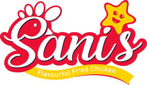

Trade Mark Journal No.2025/036 5 September 2025
UK00004247462 11 August 2025 (29,30,35,39,43)

- Class 29
- Burgers; Chicken burgers; Meat burgers; Hamburgers; Turkey burgers; Vegetable burgers; Veggie burger patties; Turkey burger patties; Milkshakes; Beef steaks; Waffle fries; Pieces of chicken for use as a filling in sandwiches; Chicken croquettes; Chicken salad; Frozen french fries; French fries; Cooked chicken; Chicken nuggets.
- Class 30
- Food seasonings; Hamburgers in buns; Cheeseburgers [sandwiches]; Hamburger sandwiches; Sandwiches containing hamburgers; Chicken sandwiches; Tacos; Sandwiches; Hamburgers contained in bread buns; Burgers contained in bread rolls; Nachos; Quesadillas; Pizzas; Burritos; Taco seasonings; Sauces; Sauces [condiments]; Mayonnaise-based sauces; Spicy sauces; Sauces for chicken; Pepper sauces; Ready-made sauces; Ketchup [sauce]; Marinades; Chili sauce; Flavourings and seasonings; Marinades containing spices; Seasonings; Hot sauce; Sauce powder.
- Class 35
- Business advice relating to restaurant franchising; Business advertising services relating to franchising; Assistance in franchised commercial business management; Business assistance relating to franchising; Franchising (Business advice relating to -); Business advice relating to franchising; Business management assistance in the field of franchising; Advice in the running of establishments as franchises; Franchising (Business advisory services relating to -); Business advisory services relating to franchising; Business management of restaurants; Business advice and consultancy relating to franchising; Provision of assistance [business] in the establishment of franchises; Business assistance relating to the establishment of franchises; Business management advisory services relating to franchising; Franchising services providing marketing assistance; Provision of assistance [business] in the operation of franchises; On-line ordering services in the field of restaurant take-out and delivery; Business advisory services relating to the establishment and operation of franchises; Business management assistance in the establishment and operation of restaurants; Providing assistance in the management of franchised businesses; Business management for shops; Business management assistance in the operation of restaurants; Services rendered by a franchisor, namely, assistance in the running or management of industrial or commercial enterprises; Advisory services (Business -) relating to the operation of franchises.
- Class 39
- Food delivery; Delivery of food; Transport of food; Delivery of food and drink prepared for consumption; Delivery of food by restaurants; Transportation of food; Packing of food; Packaging of food; Storage of food; Refrigerated transport of food.
- Class 43
- Fast food restaurants; Take-away fast food services; Restaurant services for the provision of fast food; Preparation of food and drink; Providing food and drink; Providing of food and drink; Preparation of food and beverages; Food and drink catering; Catering of food and drink; Catering (Food and drink -); Food preparation; Catering of food and drinks; Provision of food and drink in restaurants; Providing food and beverages; Take-away food and drink services; Providing food and drink in bistros; Takeaway food and drink services; Serving food and drinks; Providing food and drink in Internet cafes; Services for the preparation of food and drink; Food and drink preparation services; Serving food and drink in Internet cafes; Providing food and drink for guests in restaurants; Take-away food services; Providing food and drink in restaurants and bars; Preparation of Spanish food for immediate consumption; Providing of food and drink via a mobile truck; Take away food and drink services; Takeaway food services; Provision of food and drink; Provision of food and beverages; Providing food and drink in doughnut shops; Hospitality services [food and drink]; Services for providing food and drink; Serving food and drink for guests in restaurants; Catering for the provision of food and drink; Food and drink catering for institutions; Food and drink catering for banquets; Fast-food restaurant services; Catering in fast-food cafeterias; Take-away restaurant services; Take-out restaurant services; Restaurant services; Self-service restaurant services; Restaurants (Self-service -).
Sanis franchising group